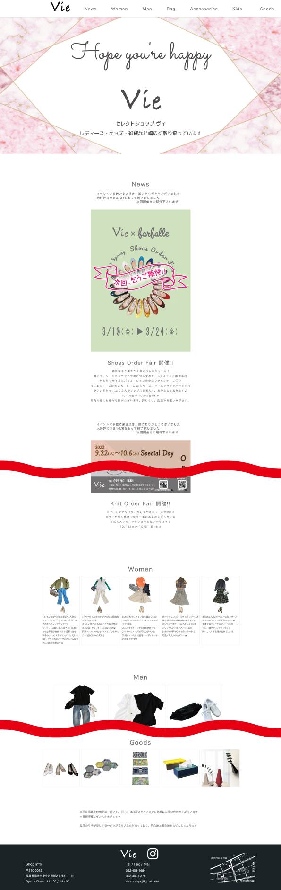
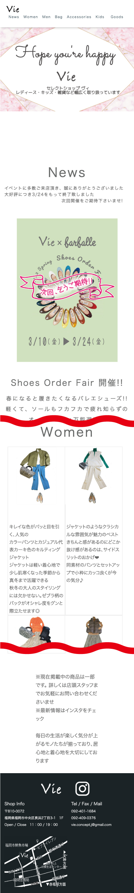

福岡市中央区長浜のアパレルショップVieのWEBサイト。
30～40代の女性
長浜2丁目周辺に来るターゲットの年代の女性に向けて
スマホではnav部分のフォントが小さく押しずらくなっていたため、メニューボタンの導入をして閲覧しやすくしたかった。
TOP画像は店舗内の写真を使用。白をベースにして、洋服が見やすく清潔感があるように。 TOP画像はシーズンによって色を変えて洋服と共に更新。
1ページでサイトを作成。header部分のnavを固定して、見たい項目へ飛ぶようにリンクボタンを設置。 商品が増えても問題ない様に、枠の幅を固定。更新時、お知らせなどをTOP画像上に記載して、 サイトを訪れた方に一番に見てもらえるように。
初稿から完成までの時間：約64時間
2021.07.14 スクロール導入
2022.04.29 TOP部分デザイン変更(スクロール廃止)
Photoshop(画像編集) / Visual Studio Code
初回アップロード時
TOP部分デザイン更新データ(スクロール廃止)